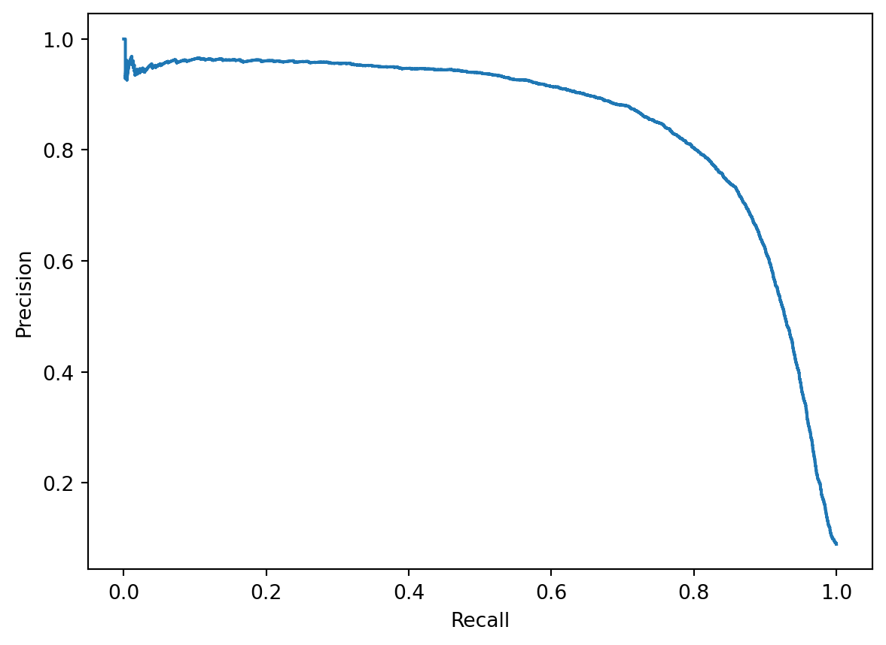

from sklearn.model_selection import train_test_split
X_train, X_test, y_train, y_test = train_test_split(
X,
y,
test_size=10000,
random_state=42,
)
y_train_5 = y_train == '5' # True for all 5s, False for all other digits
y_test_5 = y_test == '5'This blog shows the relationship between precision and recall in a Machine Learning context.
-ROC, PR, Confusion Matrix
from sklearn.metrics import ConfusionMatrixDisplay
from sklearn.metrics import confusion_matrix
from sklearn.model_selection import cross_val_predict
from sklearn.linear_model import SGDClassifier
sgd_clf = SGDClassifier(random_state=42)
sgd_clf.fit(X_train, y_train_5)
y_train_pred = cross_val_predict(sgd_clf, X_train, y_train_5, cv=3)
cm = confusion_matrix(y_train_5, y_train_pred)
cmd = ConfusionMatrixDisplay(cm)
cmd.plot();
Here you can see the numerical representation of the True Positives and True Negatives.
from sklearn.linear_model import SGDClassifier
from sklearn.model_selection import cross_val_predict
from sklearn.metrics import PrecisionRecallDisplay, PredictionErrorDisplay
from sklearn.metrics import precision_recall_curve
sgd_clf = SGDClassifier(random_state=42)
sgd_clf.fit(X_train, y_train_5)
y_scores = cross_val_predict(sgd_clf, X_train, y_train_5, cv=3, method="decision_function")
precisions, recalls, thresholds = precision_recall_curve(y_train_5, y_scores)
PrecisionRecallDisplay(precisions, recalls).plot();
from pathlib import Path
IMAGES_PATH = Path() / "images" / "classification"
IMAGES_PATH.mkdir(parents=True, exist_ok=True)
def save_fig(fig_id, tight_layout=True, fig_extension="png", resolution=300):
path = IMAGES_PATH / f"{fig_id}.{fig_extension}"
if tight_layout:
plt.tight_layout()
plt.savefig(path, format=fig_extension, dpi=resolution)idx_for_90_precision = (precisions >= 0.90).argmax()
threshold_for_90_precision = thresholds[idx_for_90_precision]from sklearn.metrics import roc_curve
import matplotlib.pyplot as plt
import matplotlib.patches as patches # extra code – for the curved arrow
fpr, tpr, thresholds = roc_curve(y_train_5, y_scores)idx_for_threshold_at_90 = (thresholds <= threshold_for_90_precision).argmax()
tpr_90, fpr_90 = tpr[idx_for_threshold_at_90], fpr[idx_for_threshold_at_90]
plt.figure(figsize=(6, 5)) # extra code – not needed, just formatting
plt.plot(fpr, tpr, linewidth=2, label="ROC curve")
plt.plot([0, 1], [0, 1], 'k:', label="Random classifier's ROC curve")
plt.plot([fpr_90], [tpr_90], "ko", label="Threshold for 90% precision")
# extra code – just beautifies and saves Figure 3–7
plt.gca().add_patch(patches.FancyArrowPatch(
(0.20, 0.89), (0.07, 0.70),
connectionstyle="arc3,rad=.4",
arrowstyle="Simple, tail_width=1.5, head_width=8, head_length=10",
color="#444444"))
plt.text(0.12, 0.71, "Higher\nThreshold", color="#333333")
plt.xlabel('False Positive Rate (Fall-Out, FPR)')
plt.ylabel('True Positive Rate (Recall)')
plt.grid()
plt.axis([0, 1, 0, 1])
plt.legend(loc="lower right", fontsize=13)
save_fig("roc_curve_plot")
plt.show()